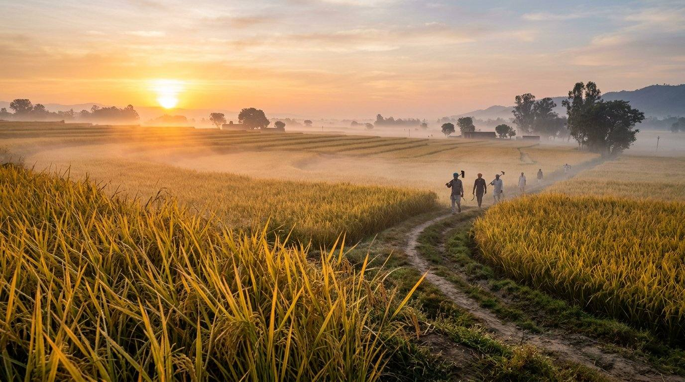
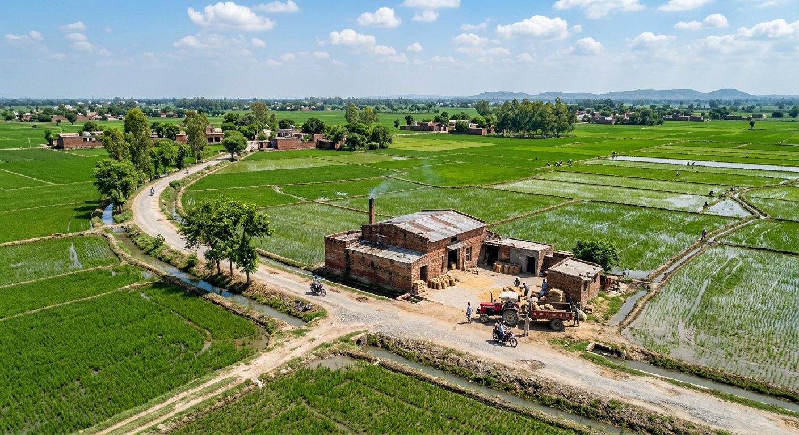
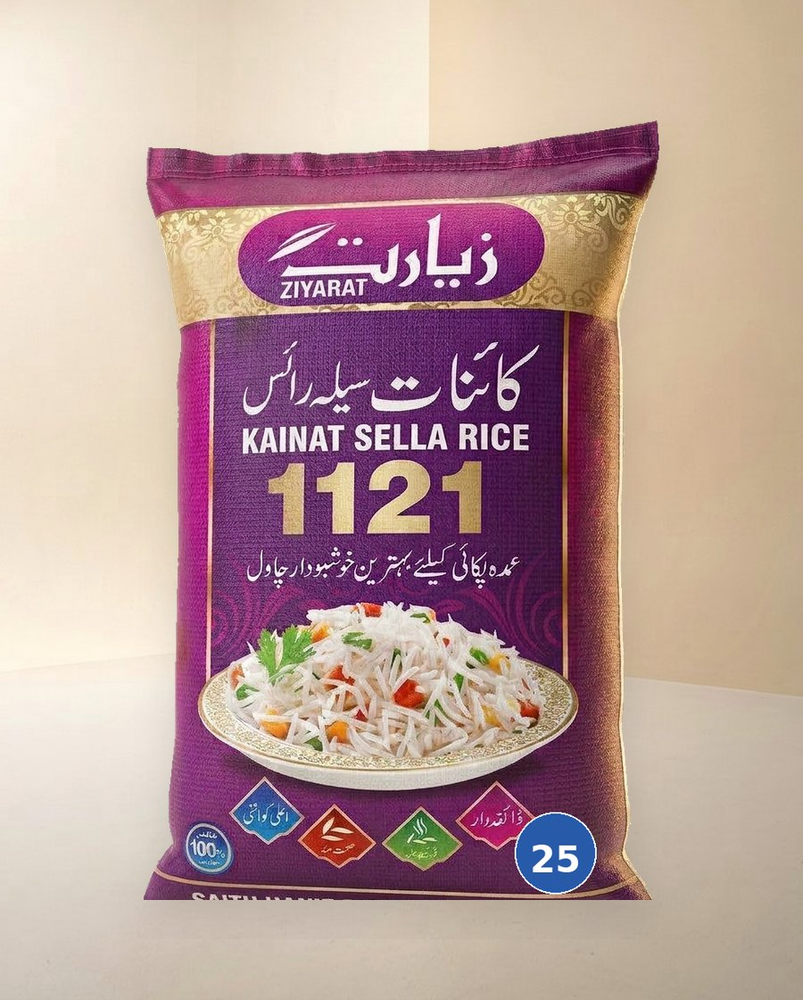
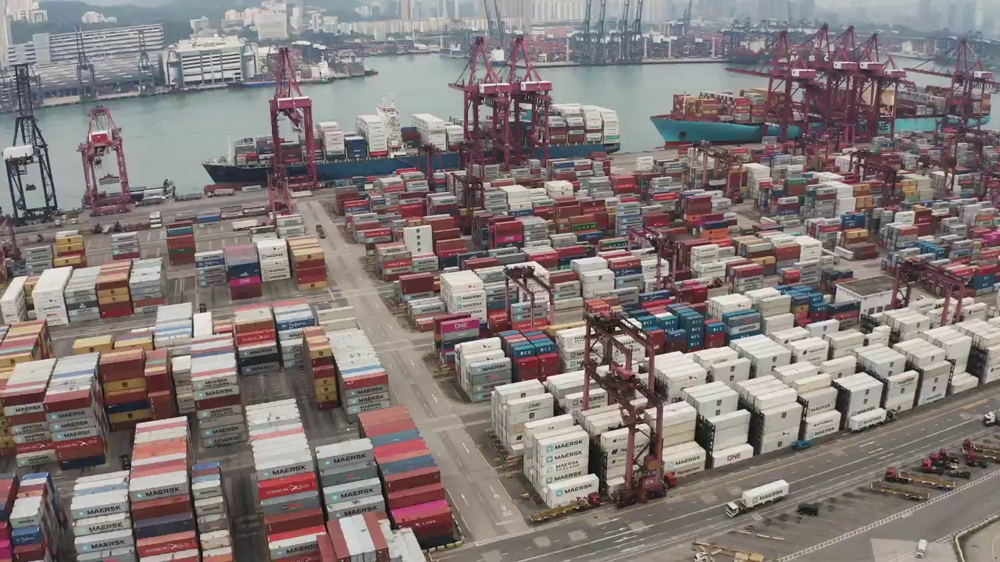

3Ziyarat · Sultan · Wazir

About
Ziyarat, Sultan and Wazir — packed on Jandiala Road, Jhabran, Sheikhupura.
About us

The mill stands on Jandiala Road, Jhabran, Sheikhupura — in Punjab’s rice belt. That is the Google Maps pin. Bags leave as Ziyarat, Sultan, or Wazir. Private label if artwork and weight are agreed in writing first.



How we work
Intake, dry, steam or sella, mill, sort, pack, load. Moisture written down. What fails the sort does not go in the sack.
Mill process
The mill
Saith Hanif founded the mill. The gate is still Jandiala Road, Jhabran, Sheikhupura.
1975
The mill starts in the Punjab rice belt. Paddy in. Bags out. That is still the work.
1985
Grain from around Jhabran. Moisture written at the gate. Weak lots stay out of the sack.
1995
Steam for a softer plate. Sella for a grain that holds in the degh. Fragrance from the paddy, not added.
2005
The mill pin is Jhabran, Sheikhupura. That is the address on Google Maps. Visits by appointment.
2015
Two marks on the sack. Same mill, same gate. Extra-long 1121 where the pack says so.
2020
Optical sort. Stones and sooty grain out. The bag says sootys clean — that is this mill’s line.

2026
Wazir joins Ziyarat and Sultan. Bags leave for Asia, the Middle East, and Europe. Write the port with the pack.
The marks